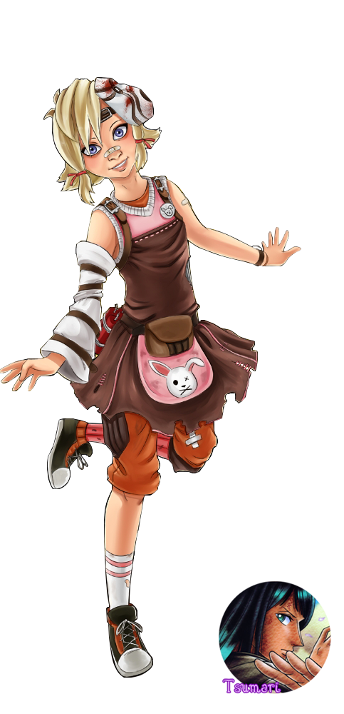
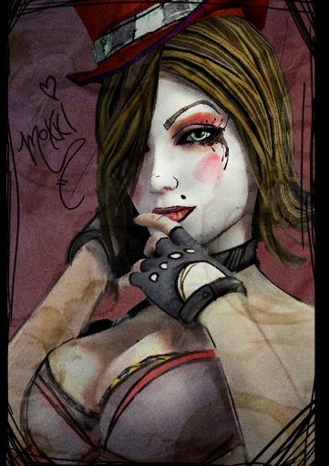

Home
Download
Extra
Extra2
Information

![Background Tina and her parents were sold to Hyperion to become test subjects for Jack's slag mutation experiments, an event which led to the deaths of her parents. She escaped their fate using a grenade that she had hidden in her dress at her mother's insistence, and once she was free of Hyperion's reach she vowed revenge on the man that had sold her family: Flesh-Stick. Involvement Borderlands 2 Tiny Tina's demolitions expertise is called into action when a Hyperion supply train believed to be carrying a Vault key needs to be stopped. With that objective in sight, she then sets the Vault Hunters to the task of finding two rockets (which she refers to as 'badonkadonks') to carry a 'suicide'-bomber toy each, and then to set them on target. Her collaboration with the Vault Hunters continues when she has them gather items and guests for a very special tea party. During the final mission Tina will contact the Vault Hunters and wish them luck in stopping Hyperion and even reads them a poem repeatedly telling the Vault Hunters to 'kill Jack'. Tina appears in a supporting role in Mr. Torgue's Campaign of Carnage. Initially she is hired by Mad Moxxi to help the Vault Hunters train prior to battling Motor Momma, but also asks their assistance in obtaining the autograph of her third favorite mass-murderer, Sully the Stabber, as well as walking her "puppy", a Badass Fire Skag named Enrique. She also provides commentary on many of the Vault Hunters' actions throughout the course of the DLC. Tiny Tina's Assault on Dragon Keep Tina takes on the role of the 'Bunker Master' for the game 'Bunkers & Badasses', where she is shown to be bad at this, by fumbling in such ways as creating impossible fights early on and not balancing the gameplay in certain areas. The real problems underlying Tina's mental state (at that time) start becoming more apparent as the player progresses, being obsessed with eating only crumpets and constantly trying to insert a manifestation of the now deceased Roland whenevershe wants to, to the dismay of the other Vault Hunters. Tiny Tina's character develops over the course of the campaign and she learns to accept Roland's death. Borderlands: The Pre-Sequel Tina makes her first appearance during the game while Lilith was interrogating Athena, inviting the Vault Hunters to play another round of Bunkers and Badasses, but was turned down. Later, after Athena finishes telling her story, Tina introduces herself and requests Athena to tell a story about fighting a raid boss. As she had no idea what a raid boss was, she "came up" with a story about fighting one (in this case, the raid boss being an enhanced version of The Sentinel). After that, Tina requests Athena to tell the story of her working for Handsome Jack again.](images/u4375-46.png)